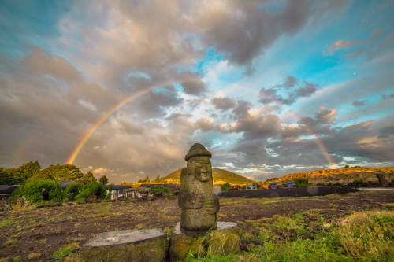

공식 명칭은 대전과학고등학교이나, 과학고등학교가 아니라 과학영재학교임을 강조하기 위하여 상장·로고 등 학교에서 만드는 공식적인 무언가에는 '과학영재학교 대전과학고등학교'라고 쓰는 경우가 많다. 이 이름 때문에 과학고등학교라고만 생각하는 사람들이 있는데 확실한 과학영재학교이다. 대전의 과학고등학교는 동신과학고등학교가 따로 존재한다. 사실 대전과학고등학교는 영재학교로 바뀌면서 대전과학영재학교로의 교명변경이 추진되었으나, 기존의 전환영재학교였던 서울과학고, 경기과학고의 전례를 들어 총동문회에서 반대하여 현재의 명칭으로 결정되었다. 실제로 국내외에서 영향력있는 지위를 지닌 선배들이 반대 영상을 찍어서 학부모들과 학생들을 설득했다고 한다.
약칭으로 '대전과학고'나 '대전과고'라고 불리나, 비공식적인 상황에서는 '대곽' 또는 '대과고'라고도 불린다. 다만 대구과학고등학교에서도 대곽이라는 용어를 쓴다. 양 학교 재학생 혹은 졸업생들은 고등학교 얘기가 나올 때마다 이 얘기로 싸운다. 또 영문 약자로 'DSHS'를 많이 쓰는데, 이 또한 대구과고랑 겹치는 듯하다. 그래서인지 DJSHS라는 약칭을 쓰기도 한다. 여담으로 이런 문제 때문에 대곽과 같은 비공식적인 약칭은 나무위키에서 리다이렉트할 수 없다.
